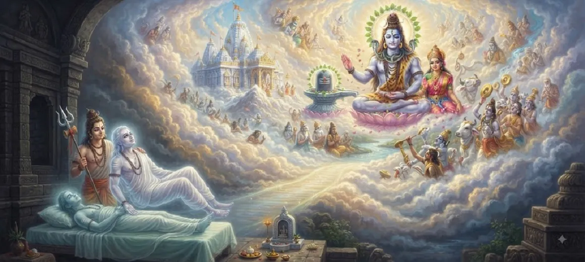

शिव की कृपा से स्वर्ग की प्राप्ति
कोटिरुद्र संहिता का छठा अध्याय इस बात पर विस्तार से बताता है कि कैसे सच्ची भक्ति, धार्मिक जीवन और भगवान शिव को समर्पित पूजा आत्माओं को स्वर्गीय लोक और परम मुक्ति प्राप्त करने में सक्षम बनाती है।
यह दैवीय कृपा के गहन आध्यात्मिक तंत्र की व्याख्या करता है, यह दर्शाता है कि कैसे महादेव अपने उपासकों को सांसारिक कष्टों से ऊपर उठाकर शाश्वत आनंद की स्थिति में ले जाते हैं।
यह अध्याय एक गहन आश्वासन के रूप में कार्य करता है कि शिव के लिए की गई भक्ति का प्रत्येक कार्य सर्वोच्च आध्यात्मिक फल देता है।
अध्याय 6 की मुख्य बातें
ईश्वरीय कृपा की शक्ति
शिव की कृपा आत्मा के उत्थान के लिए सामान्य कर्म सीमाओं को पार करती है।
दिव्य लोकों पर आरोहण
भक्तों को शांति और प्रकाश से भरे गौरवशाली स्वर्गीय निवास की प्राप्ति होती है।
पूजा का फल
महादेव को समर्पित प्रत्येक प्रार्थना, व्रत और अनुष्ठान से अक्षय पुण्य प्राप्त होता है।
दुख का अतिक्रमण
उपासक स्थायी रूप से नश्वर अस्तित्व की पीड़ा से मुक्त हो जाते हैं।
शिव का शाश्वत निवास
अस्थायी स्वर्ग से परे, सच्चे भक्त शिवलोक के सर्वोच्च क्षेत्र तक पहुँचते हैं।
मोक्ष की गारंटी
यह पाठ उन लोगों के लिए मुक्ति की गारंटी देता है जो शिव की पूर्ण शरण लेते हैं।
इस अध्याय में मुख्य विषय
शिव की कृपा का सच्चा स्वरूप
अध्याय 6 यह समझाते हुए शुरू होता है कि भगवान शिव की कृपा (अनुग्रह) ब्रह्मांड में सर्वोच्च शक्ति है, जो लाखों पापों को तुरंत नष्ट करने में सक्षम है।
सामान्य कर्म प्रतिक्रियाओं के विपरीत, जो आत्माओं को अंतहीन चक्रों में बांधती हैं, शिव की करुणा आध्यात्मिक स्वतंत्रता और दिव्य आनंद के लिए एक सीधी लिफ्ट के रूप में कार्य करती है।
आत्मा का उच्च स्तरों तक उत्थान
पाठ में बताया गया है कि कैसे एक भक्त, नश्वर कुंडल त्यागने के समय, दिव्य परिचारकों द्वारा अकल्पनीय वैभव से सुशोभित दिव्य लोकों तक ले जाया जाता है।
इन उच्च स्तरों पर, शारीरिक बीमारियों और मानसिक पीड़ा से मुक्त होकर, आत्मा गहन शांति और दिव्य साहचर्य का अनुभव करती है।
उपासना द्वारा आध्यात्मिक पुण्य का संचय
प्रवचन इस बात पर प्रकाश डालता है कि पूजा के मामूली कृत्य - जैसे कि एक बिल्व पत्र चढ़ाना या पंचाक्षर मंत्र का जाप करना - भी अक्षय पुण्य अर्जित करता है।
यह संचित आध्यात्मिक धन उच्च आयामों के माध्यम से पासपोर्ट के रूप में कार्य करता है, जो सच्चे उपासक के लिए स्वर्ग के द्वार खोलता है।
दिव्य निवासों का वर्णन
शास्त्रों में शिव के भक्तों द्वारा प्राप्त दिव्य लोकों को उज्ज्वल प्रकाश, दिव्य उद्यान और शाश्वत सद्भाव के स्थानों के रूप में वर्णित किया गया है।
जो लोग वहां रहते हैं वे दिव्य संरक्षण के तहत अपने धार्मिक सांसारिक कार्यों का फल प्राप्त करते हुए, लंबे समय तक दिव्य आनंद का आनंद लेते हैं।
स्वर्ग से शिवलोक में परिवर्तन
महत्वपूर्ण रूप से, पाठ स्पष्ट करता है कि जबकि अस्थायी स्वर्ग अद्भुत हैं, शिव के सच्चे भक्त अंततः शिवलोक में चले जाते हैं - महादेव का शाश्वत, बेदाग क्षेत्र।
यह अस्तित्व के अंतिम लक्ष्य का प्रतिनिधित्व करता है, जहां आत्मा पूर्ण चेतना और शाश्वत मुक्ति में विलीन हो जाती है।
साधकों के लिए आध्यात्मिक आश्वासन
अध्याय अपने मुख्य शिक्षण को आश्वासन के एक मजबूत संदेश के साथ समाप्त करता है: शिव के किसी भी सच्चे भक्त का कभी भी विनाशकारी या दुखद अंत नहीं होता है।
महादेव की ओर बढ़ाए गए हर कदम पर कृपा की हजार गुना प्रतिक्रिया मिलती है, जिससे परम आध्यात्मिक सफलता सुनिश्चित होती है।
अध्याय 7 की ओर
दैवीय कृपा और स्वर्गीय प्राप्ति के तंत्र को स्थापित करने के बाद, कथा पाठक को अध्याय 7 के लिए तैयार करती है, जो नंदिकेश्वर की गहन महानता की पड़ताल करती है।
इस प्रकार पाठकों को शिव के दिव्य परिचारकों और भक्तों के ऊंचे पदानुक्रम में आसानी से निर्देशित किया जाता है।
अध्याय 6 की प्रमुख शिक्षाएँ
अनुग्रह की सर्वोच्च शक्ति
शिव की कृपा से कर्म ऋण तुरंत समाप्त हो जाता है और दिव्य द्वार खुल जाते हैं।
अक्षय पुण्य
भक्ति के छोटे-छोटे कार्य उच्च स्तरों पर भारी आध्यात्मिक पुरस्कार प्रदान करते हैं।
शांतिपूर्ण आरोहण
भक्त सांसारिक जीवन से कष्टों से मुक्त होकर स्वर्गीय लोकों में प्रवेश करते हैं।
परम गंतव्य
सच्चे उपासक अंततः शिवलोक के शाश्वत आनंद तक पहुँचते हैं।
अमोघ सुरक्षा
महादेव अपने भक्तों को आध्यात्मिक विनाश से बचाते हैं और उन्हें घर ले जाते हैं।
मुक्ति की निश्चितता
शिव के प्रति समर्पण पुनर्जन्म से अंतिम मुक्ति की गारंटी देता है।
आध्यात्मिक चिंतन
शिव की कृपा से स्वर्ग प्राप्त करने की शिक्षा प्रत्येक आध्यात्मिक साधक को आश्वस्त करती है कि कोई भी ईमानदार प्रयास कभी नहीं खोता है। जब हम अपने विचारों, शब्दों और कार्यों को महादेव की पूजा के साथ जोड़ते हैं, तो हम एक दिव्य शक्ति को गति प्रदान करते हैं जो हमें नश्वर अस्तित्व की अशांति से ऊपर उठाकर शाश्वत शांति और प्रकाश के दायरे में ले जाती है।
अध्याय 6 का संदेश जीना
ईश्वरीय कृपा की सर्वोच्च प्रभावकारिता पर भरोसा रखें, यह जानते हुए कि भगवान शिव को की गई प्रत्येक प्रार्थना आपके आध्यात्मिक भाग्य को बेहतर बनाती है।
अपने दैनिक कर्तव्यों को ध्यानमग्न मन से करें, अपने कार्यों को महादेव को अर्पण के रूप में समर्पित करें।
अस्थायी सांसारिक भ्रमों से आंतरिक शुद्धता और वैराग्य पैदा करें, अपनी दृष्टि मुक्ति के शाश्वत लक्ष्य पर केंद्रित रखें।
प्रमुख आध्यात्मिक अवधारणाएँ
भगवान शिव की दिव्य कृपा और दयालु आशीर्वाद जो आत्माओं को मुक्त करता है।
धार्मिक योग्यता के माध्यम से प्रकाश और आनंद के दिव्य लोक प्राप्त होते हैं।
अस्थायी स्वर्ग से परे भगवान शिव का शाश्वत, सर्वोच्च निवास।
पूजा और धार्मिक जीवन के माध्यम से आध्यात्मिक योग्यता एकत्रित होती है।
जन्म और मृत्यु के चक्र से परम मुक्ति।
समर्पित भक्ति का सर्वोच्च आध्यात्मिक फल एवं पुरस्कार।
अध्याय सारांश
कोटिरुद्र संहिता अध्याय 6 में बताया गया है कि कैसे भगवान शिव को समर्पित सच्ची भक्ति और पूजा आत्माओं को कर्म बंधन से उबरने, अद्भुत दिव्य निवासों में चढ़ने और अंततः शिवलोक के शाश्वत आनंद को प्राप्त करने में सक्षम बनाती है। अनुग्रह (दिव्य कृपा) की सर्वोच्च शक्ति के माध्यम से, महादेव यह सुनिश्चित करते हैं कि प्रत्येक धार्मिक कार्य अनंत आध्यात्मिक फल दे, साधकों को मोक्ष का पूर्ण आश्वासन प्रदान करता है और उन्हें अध्याय 7 में नंदिकेश्वर की महानता की खोज के लिए तैयार करता है।
अक्सर पूछे जाने वाले प्रश्न
1. कोटिरुद्र संहिता अध्याय 6 का मुख्य विषय क्या है?
अध्याय 6 में बताया गया है कि कैसे भगवान शिव को समर्पित सच्ची भक्ति, पूजा और धर्म आत्माओं को स्वर्गीय लोक और परम मुक्ति प्राप्त करने में सक्षम बनाती है।
2. शिव की कृपा भक्त के अगले जीवन को कैसे प्रभावित करती है?
शिव की कृपा कर्म संबंधी बाधाओं को दूर करती है, आत्मा को दिव्य निवासों तक ले जाती है, और अंततः सांसारिक कष्टों से मुक्ति दिलाती है।
3. कौन से कर्म व्यक्ति को इस दिव्य प्राप्ति के योग्य बनाते हैं?
शुद्ध पूजा, पवित्र मंत्रों का जाप, धर्म का पालन, दान और महादेव के प्रति पूर्ण समर्पण एक साधक को दैवीय पुरस्कार के लिए योग्य बनाता है।
4. क्या इस संदर्भ में स्वर्गीय निवास स्थायी हैं?
पाठ में बताया गया है कि जहां दिव्य लोक अत्यधिक आनंद प्रदान करते हैं, वहीं शिव के सच्चे भक्त सामान्य स्वर्ग को पार करके शिव के शाश्वत निवास (शिवलोक) तक पहुंचते हैं।
5. यह अध्याय आसपास के अध्यायों से कैसे जुड़ता है?
अध्याय 6, अध्याय 5 से समर्पित ब्राह्मण महिला की कहानी का अनुसरण करता है और सीधे अध्याय 7 से पहले आता है, जो नंदिकेश्वर की महानता की पड़ताल करता है।
6. इस अध्याय का मुख्य आध्यात्मिक निष्कर्ष क्या है?
भगवान शिव की सेवा में किया गया कोई भी प्रयास व्यर्थ नहीं जाता; उनकी कृपा से लौकिक सुख और सर्वोच्च आध्यात्मिक मुक्ति दोनों मिलती है।
"शिव की कृपा की सर्वोच्च शक्ति के माध्यम से, भक्त नश्वर दुःख से परे जाते हैं और दिव्य निवासों का शाश्वत आनंद प्राप्त करते हैं।"
कोटिरुद्र संहिता के माध्यम से जारी रखें
अध्याय 6 शिव की कृपा से स्वर्ग की प्राप्ति का वर्णन करता है। अध्याय 7, नंदिकेश्वर की महानता को जारी रखें।